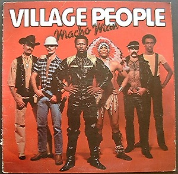
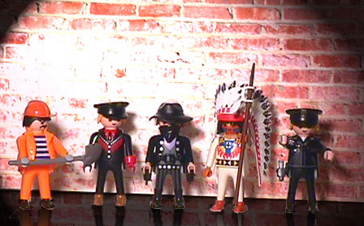
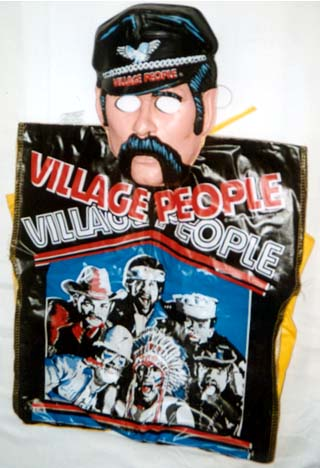
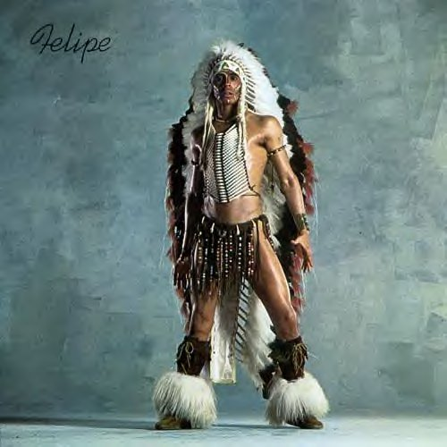
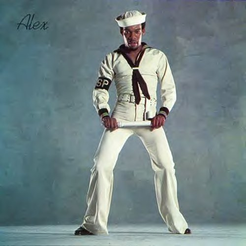
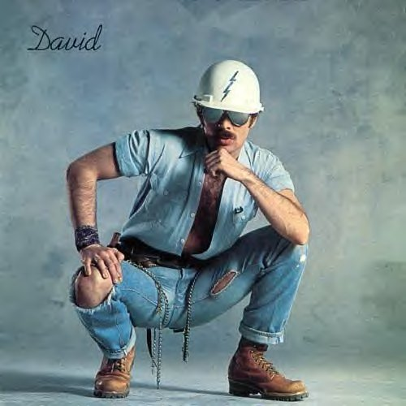
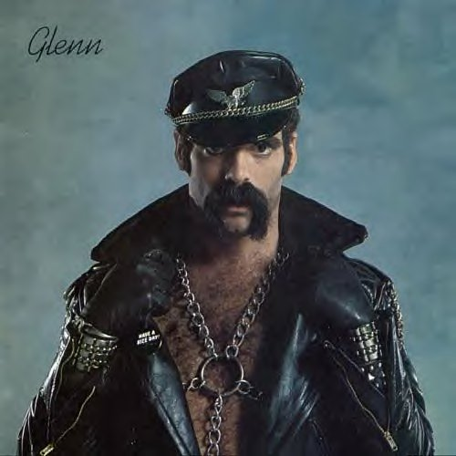
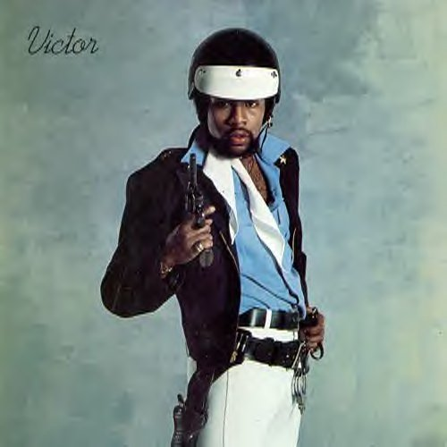

rotten > Library > Culture > Village People
The Village People
Before
the Spice Girls, before the Backstreet Boys, and way before Avril Lavigne, the
Village People came together as one for a fully branded, corporate concept
suitable for smart, colorful packaging and speedy fag-market delivery. The central
characters (a cop, a sailor, cowboy, an Indian, a leather enthusiast and a hardhat
construction worker) existed in the mind of French record producer Jacques Morali
long before the performers were hired in 1977.
It started in New York. Morali's goal was to assemble a campy, vampy, rock-and-roll
dance act capable of satisfying a number of specific criteria. First and foremost,
this group would make every effort to flaunt homosexual stereotypes in a manner
both empowering and appealing to gay men around the world.
The act would be lightweight, compact and portable, capable of performing in
small venues like nightclubs and bars - but deliver an over-the-top sound reverberating
with masculinity. The costuming, behavior and personas of each performer would
overlap throughout universally accepted gay platitudes, so not even a closeted
homosexual could effectively declare that this band wasn't reaching out to him.
Before this "dream team" was assembled, Morali had already secured a record
deal with Casablanca Records - a studio responsible for producing a series of
hits by disco queen Donna "I Will Survive" Summer. Morali hired songwriters
Phil Hurtt and Peter Whitehead to compose librettos which gently hinted
at gay themes. Two of the initial focus group beta tunes included the following:
San
Francisco (You've Got Me)
Leather, leather, leather, leather baby
Levi's and T's are the best now all right
Folsom, Folsom street on the way to Polk and Castro
You don't find them finer
Freedom, freedom is in the air, yeah
Searching for what we all treasure: pleasure
Take me to the bay, lead me to it, now, now
San Francisco / Oh I love ya / Yeah
Fire Island
Don't go in the bushes, don't go in the bushes
Don't go in the bushes, someone might grab ya, someone might grab ya
Don't go in the bushes, don't go, don't go in the bushes
Don't go in the bushes, someone might stab ya, someone might stab ya
We can scream, but let's sing
We can do each other's thing, yeah
Resembling
a diverse cross-section of stereotypes commonly observed mixing and mingling
in New York's East Village - the Village People were born. San Francisco
got them ranked number 50 on UK pop charts, but they really began to flame across
the States a year later, with the Top 30 hit Macho Man. This was followed
by two international hits, YMCA and In the Navy, hovering for
months in first and second place on UK and US charts.
"Jacques Morali had a concept, he had an idea, and we were the flesh and
blood," remembers Randy Jones, the cowboy. "In Jacques' world, he
would have been a music superstar. So he was very protective, and at times manipulative
of us. We worked non-stop. We were pushed to the limit. He thought: I'll take
their images away and put paint and make-up on them so they can't be easily
distinguished, and if they give me a hard time I'll can his ass, I'll fire him.
There had to be an element of frustration for Jacques - here you are a gay man
who has lots of money, surround by attractive men, yet you are not one of them.
I think that really deep in his heart he wanted to be what we were."
 Although
homosexuals did indeed embrace the group, many in the gay community abandoned
fanship when mainstream audiences (straight people) developed a kitschy fondness
for the music as well. Over the course of five years, the group was accused
of building an empire based largely around the constant recycling a scant handful
of tracks. Although
homosexuals did indeed embrace the group, many in the gay community abandoned
fanship when mainstream audiences (straight people) developed a kitschy fondness
for the music as well. Over the course of five years, the group was accused
of building an empire based largely around the constant recycling a scant handful
of tracks.
Their first record (Village People, 1977) contained only four songs.
Numerous records thereafter repackaged previously released material available
elsewhere. Following albums like I'm A Cruiser and Sex Over The Phone
came a string of underappreciated compilations. Titles include The Village
People's Greatest Hits, The Best of the Village People, and eventually Twentieth
Century Masters: The Essential Millennium Compilation of the Village People.
But enough meaningless product promotion - let's go backstage and say hello!
|  |
Felipe Rose
(Jan 12, 1955-)
The American Indian
Raised a New Yorker, born in Brooklyn. Rose insists his costume accurately
represents his legitimate origins and his long-standing association with
Native American groups.
His mother was a Copa Cabana dancer in the late 1940's.
Currently he lives in Richmond, Virginia.
|
|  |
Alexander Briley
(April 12, 1951-)
The Sailor / Serviceman
Loves to shop. Originally performed with the Village People in just a
T-shirt and jeans, without being one of the characters.
Widely regarded as the most vocally diverse of the group. Assumed the
lead for In The Navy. |
 |
Randy Jones
(Sep 13, 1952-)
The Cowboy
"The YMCA dance was really an organic thing that came from the audience,
and to this day every weekend at weddings, people are dancing to YMCA.
When someone hears YMCA or Macho Man or any of those songs, they don't
feel sad, they smile. To this day people will quote lyrics. There's nowhere
in YMCA where we talk about hanging out in the showers and dropping the
soap."
|
|  |
David Hodo
(July 7, 1957-)
The Construction Worker
Nicknamed scar after an incident where he nearly burned off
his face while eating fire and wearing roller skates.
Loves: animals, feeding stray cats and dogs, reading.
Enjoys: having an excellent memory.
|
|  |
Glenn Hughes
(July 18, 1950 - March 4, 2001)
The Leather Enthusiast
Hughes was working as a toll collector when friends dared him to respond
to the Village People advertisement seeking "gay singers and dancers,
very good-looking and with mustaches."
No relation to the Deep Purple vocalist of the same name.
Died of lung cancer, buried in his leatherman outfit.
No children. |
|  |
Victor Willis
(b. 1952)
The Policeman
Victor Willis performed lead vocals for the Village People from 1977
to 1980.
In the late seventies, he was married to actress Phylicia Rashad - better
known as Claire Huxtable on The Cosby Show.
He indulged in a generous hit of freebase prior to each performance,
prompting a meeting among the producers. They replaced Willis with Ray
Simpson.
Willis was arrested in February of 1997, charged with robbery and cocaine
possession.
|
Collectively the Village People have sold 85 million albums and singles, and
they regularly tour Australia.
Pornopolis |
Rotten |
Faces of Death |
Famous Nudes
|